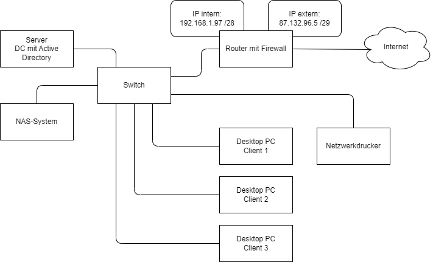

Netzwerktechnik
- Grundkonzepte von Netzwerken beschreiben
- Clients einem Netzwerk hinzufügen
- OSI-Modell nutzen
- Wichtige Protokolle zuordnen
- Netzwerkkomponenten unterscheiden
- Verkabelung von Netzwerkkomponenten dimensionieren
- IPv4-Netzwerke planen
- IPv6-Netzwerke planen
- WLAN planen
Grundkonzepte von Netzwerken beschreiben
Arbeitsauftrag - Grundkonzepte von Netzwerken beschreiben
Aufgabe 1
Definieren Sie, was ein Netzwerk ist. Unterscheiden Sie hierzu zwischen Peer-to-Peer- und Client-Server-Verbindungen.
Aufgabe 2
Aus welchen Gründen werden Computer-Netzwerke eingerichtet?
Aufgabe 3
Nennen und beschreiben Sie typische Kopplungselemente (d.h. Hardware) für die Herstellung von Computer-Netzwerken. Suchen Sie jeweils ein Bild für einen Stellvertreter der Kategorie heraus.
Aufgabe 4
Welche Faktoren sind bei der Planung von Netzwerken bei einem Kunden zu berücksichtigen?
Clients einem Netzwerk hinzufügen
Arbeitsauftrag - Clients einem Netzwerk hinzufügen
Aufgabe 1
Welche Informationen muss ein kabelgebundener Netzwerk-Client wie bspw. ein Desktop-PC erhalten, um am Netzwerk teilnehmen zu können?
Aufgabe 2
Wenn in einem Netzwerk ein DHCP verfügbar ist, übernimmt dieser Aufgaben. Welche sind dies?
Aufgabe 3
Wie erhalte ich mit einem verbundenen Client Informationen zu den Netzwerk-Details. Unterscheiden Sie zwischen Windows- & Linux-Systemen.
Aufgabe 4
Wie lautet der Kommandozeilenbefehl, um die Anbindung an einen anderen Client im Netzwerk zu testen, wenn der Ziel-Client die IP-Adresse 192.168.178.2 hat?
Aufgabe 5
Welche IP-Adressbereiche kommen für private Netze in Frage?
OSI-Modell nutzen
Aufgabe 1
Zeigen Sie den tabellarischen Aufbau des OSI-Referenz-Modells auf, indem Sie die Layer-Nr., den Namen auf englisch und deutsch sowie die Aufgaben der Schicht darstellen.
Aufgabe 2
Welche Ziele werden mit der Nutzung / Erläuterung von Netzwerken mithilfe des OSI-Referenz-Modells verfolgt?
Aufgabe 3
Beschreiben Sie die einzelnen Schichten nun etwas detaillierter. Was sind die Aufgaben, welche Pakete werden genutzt, welche Fehler könnten in dieser Schicht vorliegen?
Wichtige Protokolle zuordnen
Aufgabe 1
Führen Sie die folgenden Protokolle tabellarisch auf. Ordnen Sie die OSI-Schicht, den ausgeschriebenen Namen sowie eine Beschreibung zu:
- DNS
- SMB
- NFS
- SMTP/S
- HTTP/S
- IPSEC
- IP
- TCP
- UDP
- SSH
- DHCP
- ARP
- TLS
Aufgabe 2
Welche Informationen sind zur Konfiguration eines E-Mail-Accounts in einem Client notwendig? Suchen Sie die Protokolle und Einstellungen zur Konfiguration Ihrer Schul-E-Mail-Adresse in einem Client heraus.
Aufgabe 3
Inwiefern unterscheiden sich die Protokolle HTTP und HTTPS voneinander? Erläutern Sie, wie die SSL Verschlüsselung funktioniert.
Aufgabe 4
Was genau ist HTTPS-Inspection? Welche Probleme können damit einher gehen?
Netzwerkkomponenten unterscheiden
Arbeitsauftrag - Netzwerkkomponenten unterscheiden
Aufgabe 1
Beschreiben Sie den Aufbau mithilfe von Netzwerk-Komponenten, die das Netzwerk in folgendem Beispiel abbilden. Welche teilweise auch nicht eingezeichneten/nicht explizit genannten Kopplungselemente werden für das Netzwerk benötigt?
Aufgabe 2
Welche Aufgabe hat ein Router? Machen Sie diese mithilfe eines Beispiels mit IP-Adressen Ihrer Wahl deutlich.
Aufgabe 3
Ein Server-Rack hat eine definierte Größe sowohl in der Höhe als auch in der Breite. In welchen Maßeinheiten werden diese angegeben?
Aufgabe 4
Für ein kleines Unternehmen wird diskutiert, ob ein managed oder unmanaged Switch eingesetzt werden sollte. Stellen Sie beide Varianten gegenüber und wägen Sie die Vor- und Nachteile ab.
Verkabelung von Netzwerkkomponenten dimensionieren
Arbeitsauftrag - Verkabelung von Netzwerkkomponenten dimensionieren
Aufgabe 1
Beschreiben Sie den primären, sekundären und tertiären Bereich der strukturierten Verkabelung für Netzwerke.
Aufgabe 2
Welche Kabeltypen werden für eine Netzwerkinfrastruktur benötigt? Beschreiben Sie diese kurz.
Aufgabe 3
Stellen Sie tabellarisch Kupferkabel einem Lichtwellenleiter gegenüber.
Aufgabe 4
Was gilt es bei der Herstellung von Netzwerken hinsichtlich der Verkabelung zu beachten?
IPv4-Netzwerke planen
Aufgabe 1
Welche (historischen) Netzklassen sind in IPv4 definiert? Welche Adressbereiche bzw. Subnetzmasken sind hier standardmäßig eingeplant? Führen Sie die Informationen tabellarisch auf.
Aufgabe 2
Welche IPv4-Bereiche sind für private Netze definiert?
Aufgabe 3
Eine mögliche Angabe zur Definition eines Netzes wäre bspw. 192.168.178.0 mit einer Subnetzmaske 255.255.255.0. Beschreiben Sie dieses Netz mittels CIDR-Schreibweise und erläutern Sie im Allgemeinen, wie die CIDR-Schreibweise funktioniert.
Aufgabe 4
Erläutern Sie, was genau unter dem Konzept des "Subnetting" zu verstehen ist.
Aufgabe 5
Die Dokumentation eines Netzwerks beim Kunden ist unvollständig. Ermitteln Sie die fehlenden Informationen mithilfe der Abbildung. Orientieren Sie sich dabei an den Vorgaben des Routers:

| Geräte/ Angaben |
NAS-System | Desktop PC Client 1 | Netzwerk-Drucker |
|---|---|---|---|
| IP-Adresse | |||
| Subnetzmaske | |||
| Standardgateway |
Aufgabe 6
In einem Großhandel soll die Netzwerkanbindung der Arbeitsplätze und verschiedener Netzwerkkomponenten erneuert werden. Hierfür sollen Subnetze gebildet werden. Wie lautet die Subnetmaske bei der Netzadresse 15.0.0.0 mit 10 verwendbaren Subnetzen, sowie mit mindestens 12 Hosts je Subnetz?
Aufgabe 7
Sie werden zur Dokumentation eines Netzwerks herangezogen, um die Ist-Analyse durchzuführen. Ihnen liegen folgende Informationen vor:
- Netzadresse: 192.52.190.0
- Subnetze: 6
- Mindestanzahl von Hosts je Subnetz: 10
Ermitteln Sie die Subnetzmaske.
Aufgabe 8
Ein neuer Server soll in ein vorhandenes Netzwerk integriert werden. Dazu muss dieser manuell hinsichtlich der IP-Adresse konfiguriert werden. Beurteilen Sie jeweils, ob die vorgeschlagenen IP-Adressen geeignet sind und begründen Sie Ihre Entscheidung:
- Vorschlag: 192.168.10.0 /24
- Vorschlag: 192.168.10.200 /24
- Vorschlag: 127.0.0.1 /8
IPv6-Netzwerke planen
Arbeitsauftrag - IPv6-Netzwerke planen
Aufgabe 1
Erklären Sie den Unterschied zwischen einer IPv4-Adresse und einer IPv6-Adresse.
Aufgabe 2
Kürzen Sie die folgende IPv6-Adresse gemäß den Kürzungsregeln:
2001:0db8:0000:0042:0000:8a2e:0370:7334
Aufgabe 3
Erläutern Sie den Zweck von Link-Local-Adressen in IPv6.
Aufgabe 4
Nehmen Sie die IPv6-Adresse 2001:0db8:abcd:0023::/64 und erstellen Sie vier Subnetze. Geben Sie die Subnetz-IDs und Range für jedes Subnetz an.
Aufgabe 5
Was ist eine "Loopback-Adresse" in IPv6 und welche Adresse wird dafür verwendet?
WLAN planen
Arbeitsauftrag - WLAN planen
Aufgabe 1
Für die WLAN-Technik gibt es IEEE-Standards. Führen Sie die aktuell üblichen Standards tabellarisch auf und fügen Sie die maximalen Übertragungsraten sowie das Frequenz-Band hinzu.
Aufgabe 2
Welche Vorteile hat die Nutzung von WLAN?
Aufgabe 3
Welche Nachteile gehen mit der Nutzung von WLAN einher?
Aufgabe 4
Definieren Sie, was eine SSID ist.
Aufgabe 5
Welche aktuellen WLAN-Verschlüsselungsmethoden werden genutzt? Wie unterscheiden sich diese?
Aufgabe 6
Unterscheiden Sie die Funktionsweise eines Repeaters von der eines Access-Points.
Lizenz

Der KIT PV AP1 Kurs von André Neumann ist lizenziert unter einer Creative Commons Namensnennung - Nicht-kommerziell - Weitergabe unter gleichen Bedingungen 4.0 International Lizenz. Fragen, Hinweise etc. an neumann@mmbbs.de.